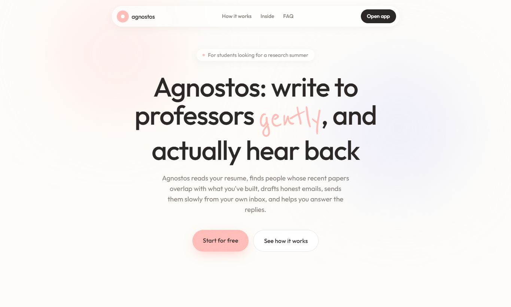
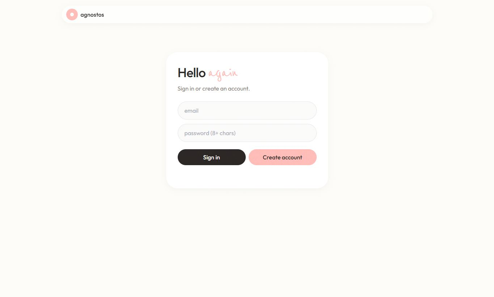

Agnostos v3 · source and self-hosting guide
Agnostosthe self-hosted web app for research internship outreach
Agnostos v3 is a self-hosted web app for research internship outreach. It is built on the Agnostos command-line pipeline (v2). Each user signs up, uploads a resume, and adds their own mailbox and model key. From the browser they can find professors, verify emails, draft emails, send them paced from their own inbox, read replies and send follow-ups. A FastAPI server runs the v2 pipeline as a subprocess for each job.
- FastAPI
- SQLAlchemy + Alembic
- PostgreSQL / SQLite
- Fernet encryption
- Tailwind (prebuilt)
- Groq / OpenAI
- OpenAlex
- WebView2 desktop
No public hosted instanceThere is no public Agnostos service to sign up for. This page describes the source code and how to run it yourself. Hosted deployment is paused, and live sending is off by default.

web/index.html, rendered locally from the repository.01What it does
Agnostos v3 puts the v2 outreach pipeline behind an accounts-based web interface. Each user's resume, settings, credentials and job outputs stay in that user's own workspace.
- Discover
Find professors whose recent papers match your resume, using OpenAlex publication data. - Verify & score
Check addresses, then score each match locally before any model call. - Draft
Write a personalised email for each match with your own Groq or OpenAI key. - Send & reply
Send paced emails from your own mailbox, read replies and draft follow-ups.
Researchers library
A database-backed contact list with add, edit, delete, search, pagination, and XLSX import and export. Imports never approve or send mail.
Jobs dashboard
Pipeline commands run as background jobs. Their logs stream to the browser, and you can cancel a running job.
Desktop preview
A Windows build that serves the same interface on 127.0.0.1 inside a WebView2 window. Sending and the scheduler are always disabled in this build.
02How it works
web/Landing page and dashboard. Plain HTML and JavaScript, with the compiled Tailwind CSS and fonts checked in. Works offline.
server/FastAPI handles authentication, per-user workspaces, encrypted credentials, the job runner and the daily scheduler, with SQLAlchemy storage.
outreach/The v2 command-line pipeline, unchanged. Each job runs it as a subprocess inside that user's workspace.
- Credentials. SMTP and IMAP passwords and API keys are encrypted with Fernet using
APP_SECRET. They are passed only into that user's job environment. Passwords are hashed with PBKDF2-SHA256. - Allow-listed jobs. The UI can run only
profile,tls-check,stats,discover,verify,run,send,check-repliesandreplies. Each command accepts a fixed set of flags. Values are type-checked, so raw arguments never reach the shell. - Send gate. The API refuses
sendjobs,replies --sendjobs and enabled schedules unlessAGNOSTOS_LIVE_SEND_ENABLED=trueis set deliberately. The Docker Compose file defaults it tofalse. - Storage. Accounts, settings, sessions, job history, schedules and contacts use SQLAlchemy with Alembic migrations. Docker Compose provisions PostgreSQL 17. Local development keeps using
data/agnostos.db(SQLite) unlessDATABASE_URLis set. Each user's files live in/data/users/<id>/.
03Status
These statements are taken from the repository's README and docs/database.md.
| Part | State |
|---|---|
| Accounts, settings, job history, Researchers library | Database-backed. Uses SQLAlchemy and Alembic, with SQLite locally and PostgreSQL in Docker. |
| Pipeline sending and reply queues | Still legacy. Jobs use workbooks, and Replies uses a JSON queue. The contact library does not feed the sender. |
| Windows desktop preview | Available from source. A CI artifact is built from main. It is a private preview without the v2 safety guarantees, and sending is disabled. |
| Hosted deployment | Paused. No public instance exists. The Oracle VM staging guide is kept as a historical plan. |
| Next milestone | Database-backed campaigns, drafts, approvals and send attempts; a durable worker queue; a shared React interface and a Tauri desktop client. |
Screenshots
web/index.html).
web/app.html), before an account exists. Both pages were captured from the repository's static files; no user data is shown.04Run it yourself
Quick start (local)
start.cmd # Windows
./start.sh # macOS / LinuxThen open http://localhost:8000. The scripts install requirements.txt and server/requirements.txt and start Uvicorn on port 8000. Note that they bind to 0.0.0.0, so other machines on your network can reach the server.
No-send preview of the Researchers library
$env:AGNOSTOS_SCHEDULER_ENABLED = "false"
python -m uvicorn server.app:app --host 127.0.0.1 --port 8000Open http://localhost:8000/app.html, sign in, and select Researchers. Disabling the scheduler does not block Pipeline jobs that you start manually.
Windows desktop preview
You need Python 3.13 (64-bit) and the Microsoft Edge WebView2 Runtime.
py -3.13 -m pip install -r desktop-requirements.txt
py -3.13 desktop.py
# distributable folder (needs Node.js/npm for the stylesheet build)
.\build-desktop.ps1 -Python "C:\Path\To\Python313\python.exe"
.\dist\Agnostos\Agnostos.exe --health-check
.\dist\Agnostos\Agnostos.exeDistribute the whole dist\Agnostos folder. The first launch creates %LOCALAPPDATA%\Agnostos\, which holds its own SQLite database, encryption key, uploads and job output. Back up that directory as a whole. Deleting its .app_secret makes the encrypted settings unreadable.
Docker Compose with PostgreSQL
# .env (never commit it)
APP_SECRET=<Fernet key; keep the original key when upgrading>
POSTGRES_PASSWORD=<long random hex password>
AGNOSTOS_SCHEDULER_ENABLED=false
AGNOSTOS_LIVE_SEND_ENABLED=false
docker compose up -d --buildThe app is published only on 127.0.0.1:8000, and PostgreSQL is not published to a host port. Run one API process only; the job runner and scheduler are not a distributed queue. Put an HTTPS reverse proxy in front before exposing the app.
What each user needs
- A model key. A Groq key is free. With OpenAI
gpt-5-mini, the README estimates about $0.004 per draft. - A mailbox with an app password. For Gmail, turn on 2FA and create an app password.
- A resume (PDF or DOCX), and optionally a CV PDF to attach.
05Limitations
- No public instance exists, and hosted deployment is paused. Anyone who uses Agnostos v3 runs it on their own machine or server.
- The sending path is the legacy v2 pipeline and does not include v2's later safety fixes. The desktop preview and the default Docker settings disable sending.
- If you host it, users' mailbox passwords are stored on your server. Use a strong
APP_SECRET, keep backups encrypted and publish a privacy note. - Every user's jobs run on one machine. A paced send of 40 emails takes 4 to 7 hours, so the host needs a process that stays up, a persistent disk and outbound SMTP. Serverless and sleeping free tiers do not work.
- Each user sends from their own mailbox, so deliverability and rate limits apply per user. Keep
DAILY_SEND_CAPat or below 40. - In the desktop preview, other processes on the same PC can reach the loopback HTTP service while the window is open.